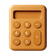
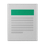

Félretenni
III. negyedév
Július–szeptember számlái után
96 000 Ft
IV. negyedév, eddig
Október és november számlái
154 000 Ft

Idei kereteid
Még 3 685 000 Ft
számlázhatsz ÁFA nélkül. Ennyi fér még az alanyi ÁFA-mentességbe.
eddig 16 315 000 Ftkeret 20 000 000 Ft

Mennyit kerestem?
16 170 000 Ft
bevételed jött be idén eddig. Adó és járulék után kb. 14 527 000 Ft maradt neked.
Ha így folytatod, év végéig kb. 19 400 000 Ft lesz a bevételed.
Határidők
Szja-előleg, IV. negyedév
december 12.
139 380 Ft
Havi TB-járulék
december 12.
207 126 Ft
Ha elakadsz
Kollégánk 24–48 órán belül visszahív, munkanapokon 9 és 17 óra között.